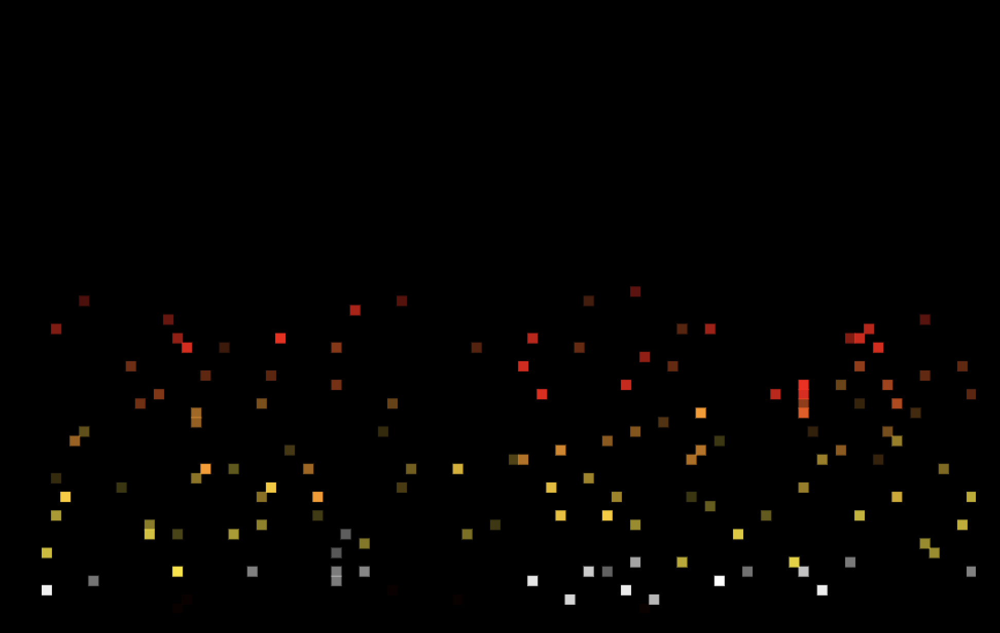
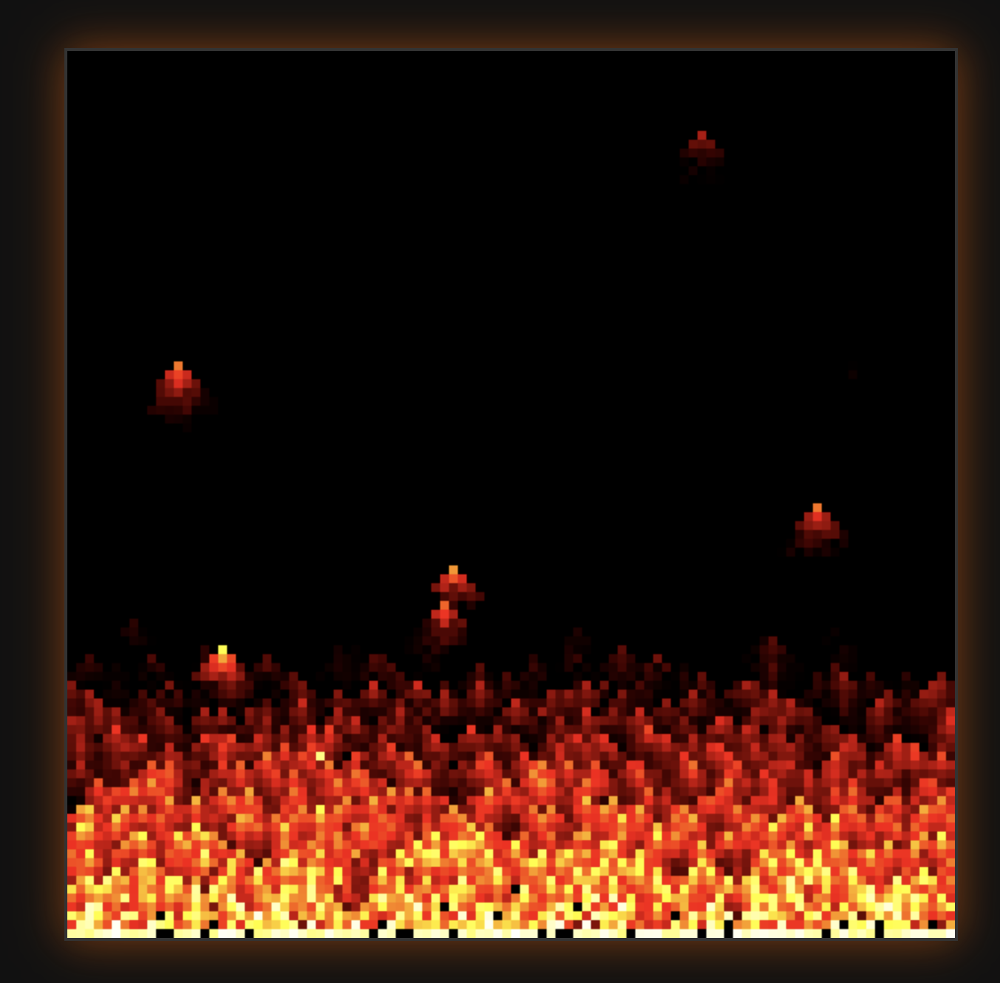

Flame Animation: DeepSeek
I wanted to see how different LLMs would react to being asked to create some canvas-based art. I gave them the following prompt:
Let's have some fun with a HTML5 canvas element. I would like you to generate the source of an HTML document. Any javascript should be inline inside a <script> element. This web page should have a canvas element. Logically divide it into a 2D grid, 100 rows by 100 columns. Each logical cell in this grid can contain a color. Given this, let's simulate a flame animation in the grid. When viewing the page, you should see the cells changing color to produce a flame effect.
This is a flame animation created using DeepSeek (link)
Flame Animation: Claude
This is a flame animation created using Claude (link)
